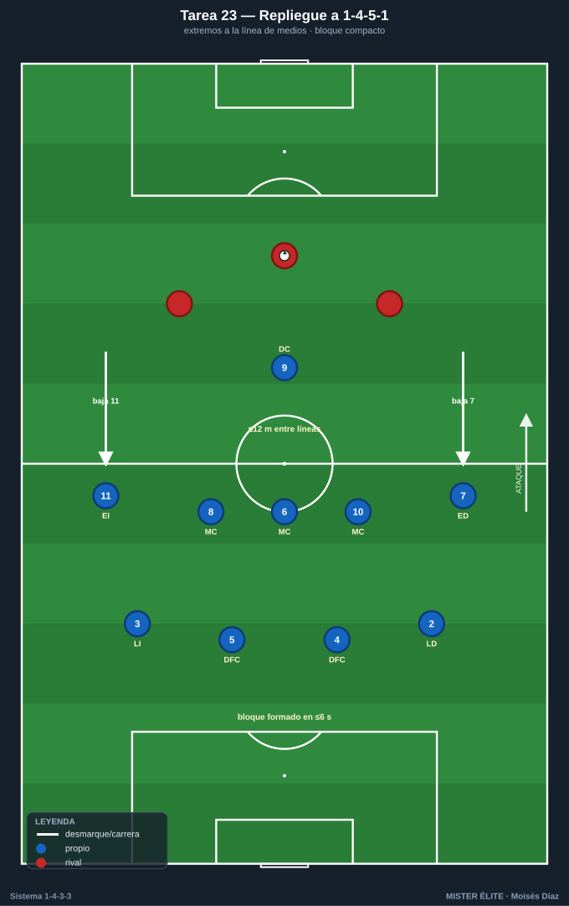
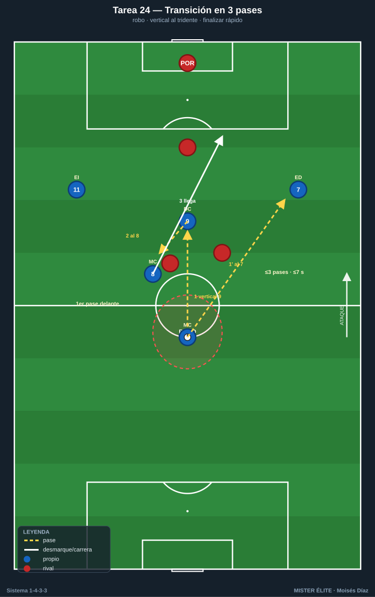
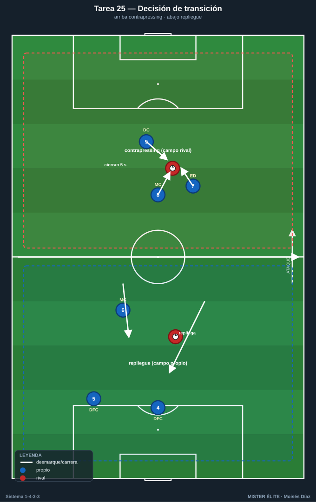
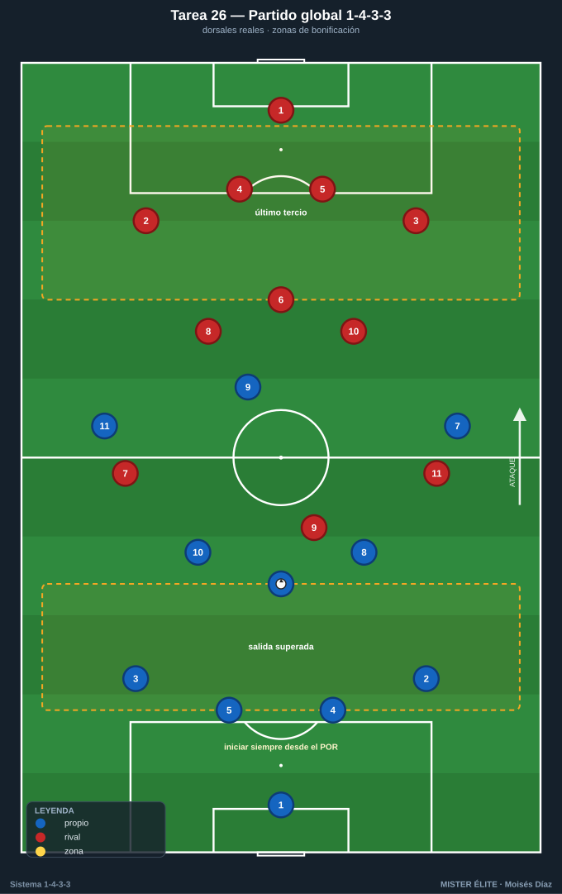

Bloque 6 · Transiciones + partido condicionado (T23–T26)
Repliegue a 1-4-5-1, transición ofensiva tras robo, decisión contrapressing vs repliegue y partido condicionado global. Dorsales según la convención del curso.
T23 — Repliegue ordenado a 1-4-5-1: los extremos bajan
- Objetivo (1-4-3-3): entrenar el repliegue defensivo del 1-4-3-3 a 1-4-5-1 / 1-4-1-4-1: cuando no hay presión, los extremos 7-11 bajan a la línea de 5 medios y el 9 queda de referencia.
- Tipo: Situacional defensiva D>S (transición defensiva tras pérdida sin contrapressing posible).
- Organización: Campo a lo ancho, 70×60 m. Equipo en foco: 11 o 9 jugadores en 1-4-3-3. Rival con balón ataca posicionalmente. 2 porterías.

- Desarrollo: Tras pérdida sin opción de robo inmediato, el equipo repliega: extremos a la línea de medios (1-4-5-1), interiores y pivote forman la línea de 5, defensa de 4 compacta. Recuperar la forma y defender el bloque medio.
- Provocaciones (medibles): el bloque debe estar formado (4-5-1 con extremos en línea de medios) en ≤6 s tras la pérdida (verificable). Si el rival progresa por dentro mientras se repliega → punto rival. Distancia entre líneas ≤12 m.
- Variantes: (fácil) repliegue guiado y rival lento; (media) real; (difícil) el rival ataca rápido la transición → obliga a frenar primero (un jugador) y replegar el resto.
- Coaching: quién frena y quién recupera la posición; los extremos bajan disciplinados; compactar líneas; comunicación para reorganizar.
- Duración/Categoría: 4 × 5 min. A.
T24 — Transición ofensiva: del robo al tridente en 3 pases
- Objetivo (1-4-3-3): explotar la transición defensa-ataque del 1-4-3-3 tras robar, aprovechando que el tridente queda alto: pase rápido al 9/extremo y ataque de la espalda con interiores.
- Tipo: Situacional D-A / contraataque 6v6 con porterías.
- Organización: Campo medio-largo, 60×50 m. 6v6 con porteros. Estructura: al robar, los 3 de arriba (tridente) buscan profundidad.

- Desarrollo: Juego de presión; al robar, transición rápida: primer pase vertical al 9 (apoyo) o al extremo (profundidad), llegada de un interior. Finalizar antes de que el rival se reorganice.
- Provocaciones (medibles): gol en transición con ≤3 pases y en ≤7 s desde el robo = doble. El primer pase tras robar debe ir hacia delante (vertical). Si se juega hacia atrás tras robar → la jugada no puntúa en transición.
- Variantes: (fácil) superioridad para el que roba (6v5); (media) 6v6; (difícil) obligar a finalizar en ≤5 s.
- Coaching: primer pase vertical y limpio; el tridente ataca la profundidad de inmediato; decisión rápida conducir vs pasar; sostener el equilibrio por si fallo.
- Duración/Categoría: 5 × 4 min. S.
T25 — Contrapressing vs repliegue: decisión de transición
- Objetivo (1-4-3-3): entrenar la decisión colectiva tras la pérdida entre contrapressing (recuperar arriba) y repliegue ordenado a 1-4-5-1, según la posición del balón y el número de jugadores por delante.
- Tipo: Juego en espacio reducido (JER) 8v8 con doble condición.
- Organización: 55×45 m, 2 porterías grandes + 2 mini-porterías en banda. Línea central marcada que divide "zona de contrapressing" (campo rival) de "zona de repliegue" (campo propio).

- Desarrollo: Juego libre; si se pierde en campo rival → contrapressing 5 s; si se pierde en campo propio → repliegue inmediato a bloque. El equipo debe leer correctamente qué hacer según dónde y cómo pierde.
- Provocaciones (medibles): decisión correcta (contrapressing arriba / repliegue abajo) verificada por el míster = punto de equipo. Recuperación arriba en ≤5 s = doble. Repliegue formado en ≤6 s evita el punto rival. Decisión errónea (presionar mal abajo dejando espacios) = punto rival.
- Variantes: (fácil) zonas amplias y señal del míster; (media) lectura libre; (difícil) añadir comodín al equipo rival en transición (les da superioridad).
- Coaching: leer el momento (¿tengo gente delante del balón? presiono; ¿estoy superado? repliego); liderazgo y comunicación del 6 organizando; coherencia colectiva (todos la misma decisión).
- Duración/Categoría: 4 × 5 min. S.
T26 — Partido condicionado global 1-4-3-3
- Objetivo (1-4-3-3): integrar y competir todos los principios del sistema (salida con pivote, mediocampo de 3, presión del tridente, amplitud de extremos, llegada, transiciones) en un partido con reglas que premian el modelo.
- Tipo: Partido condicionado 11v11 (o 9v9 / 10v10) campo completo.
- Organización: Campo completo. Ambos equipos en 1-4-3-3 con dorsales reales (1-2-3-4-5-6-8-10-7-9-11). 2 porterías con porteros. Conos para zonas de bonificación (salida superada, último tercio).

- Desarrollo: Partido dirigido. El míster congela jugadas para corregir el patrón del 1-4-3-3 en sus 4 fases. Se compite con marcador.
- Provocaciones (medibles): gol tras salida construida desde el POR superando la 1ª presión = doble. Gol tras desborde de extremo o llegada de interior = doble. Gol tras robo en presión alta = triple. Iniciar siempre desde el portero; balón fuera → saque rápido manteniendo el sistema.
- Variantes: (fácil) condiciones de 1 sola fase por bloque; (media) todas las bonificaciones activas; (difícil) superioridad numérica al rival y/o porterías pequeñas extra para premiar la amplitud.
- Coaching: congelar para corregir posición y decisión; conectar lo entrenado con el partido real; refuerzo de los comportamientos clave del sistema; liderazgo del 6 y del 9.
- Duración/Categoría: 3 × 10 min (o 2 × 15). S.